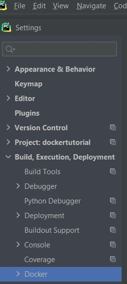
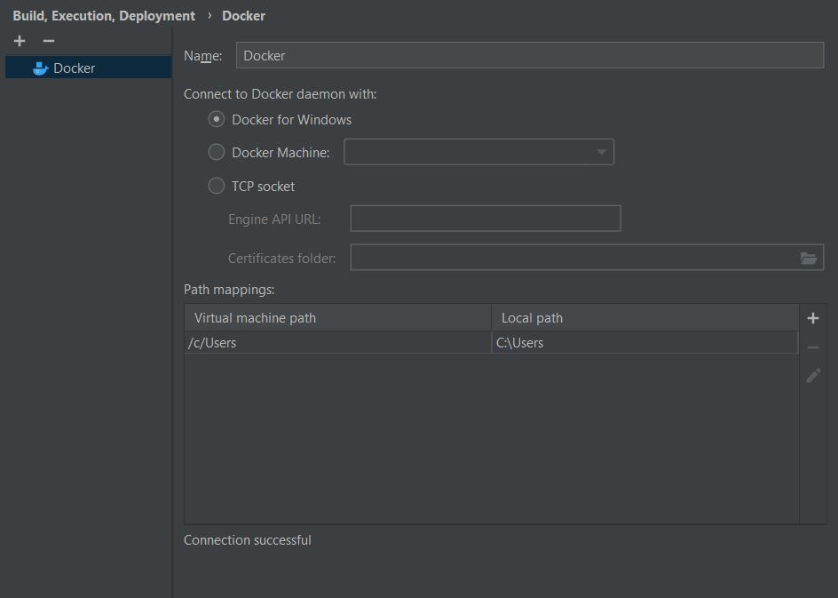
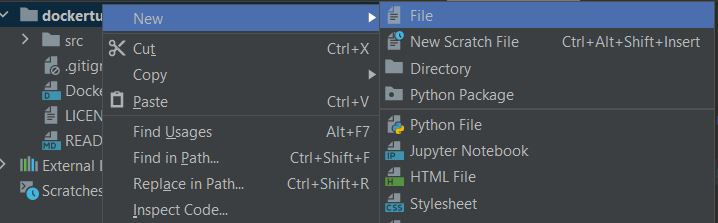
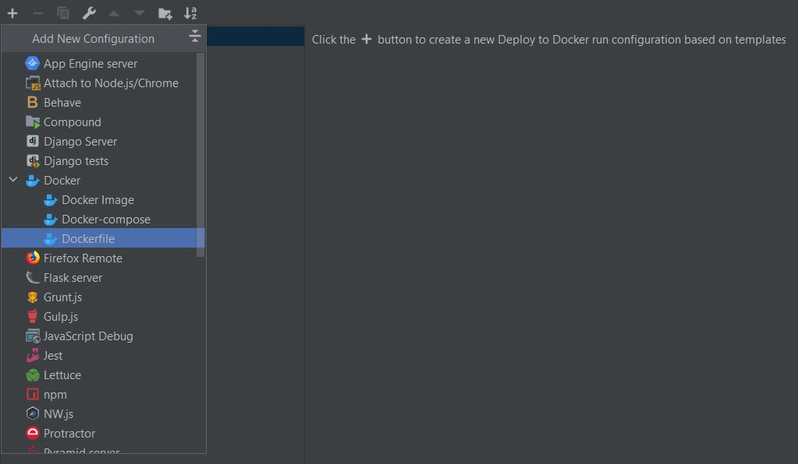
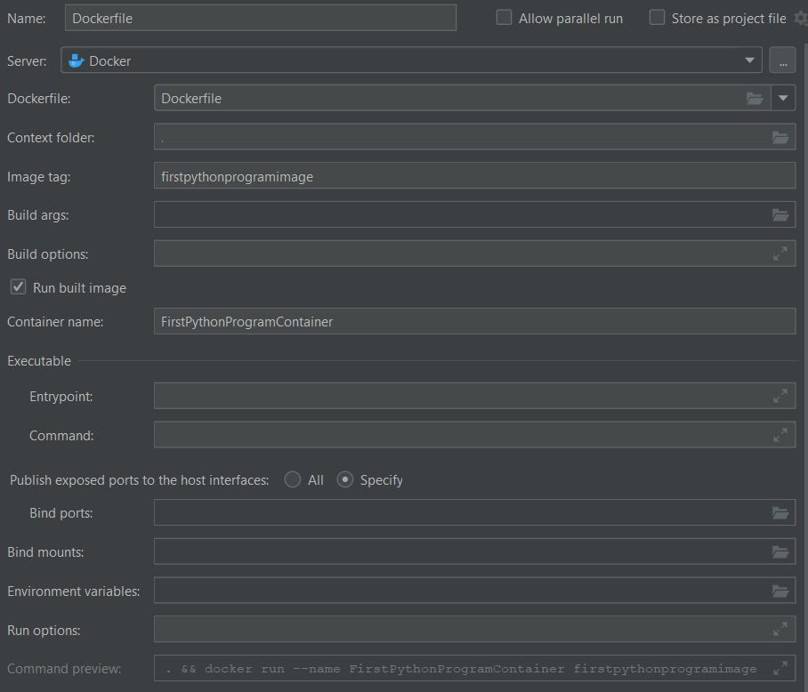
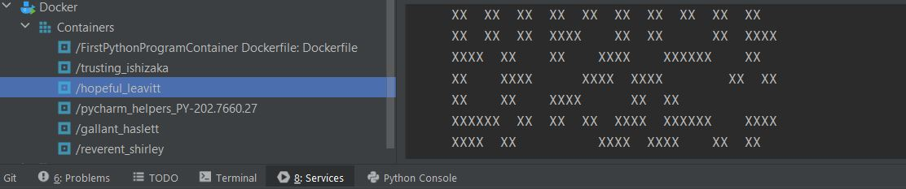
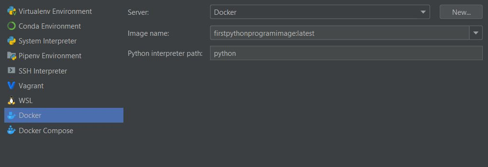

Docker with Pycharm
In this tutorial we will learn how to use pycharm along with Docker and we are also going to learn how to use the docker as a interpreter in pycharm for compiling the code.
Docker
Many developers are struggling with the deployment of their programs. Sometimes it is easy to deliver a program, but to deliver the running environment for that program is not that easy. Docker is the delivery of environments, and we can also use these predefined environments to run specific programs, such as Ubuntu and Apache (a server end program). Docker is a sort of flexible “virtual machine”, providing the minimum environment for your programs, and the environment has little relationship with the host/local physical machine.
Pycharm
PyCharm is an integrated development environment (IDE) used in computer programming, specifically for the Python language. It is developed by the Czech company JetBrains. It provides code analysis, a graphical debugger, an integrated unit tester, integration with version control systems (VCSes), and supports web development with Django as well as data science with Anaconda. PyCharm is cross-platform, with Windows, macOS and Linux versions. The Community Edition is released under the Apache License,[8] and there is also Professional Edition with extra features – released under a proprietary license. We are mostly going to use the pycharm professional as they provide it free for the students.
Install Docker to your PC
In this tutorial, I am going to install docker in Windows and Mac
Install Docker. The only component we have to install. Download the installer from the Windows, Mac download page and run it. After the installation, reboot the computer.
You can also refer Docker Tutorial for step by step method explaining how to install the docker version to your workstation.
To Get Started
In order to get started open the pycharm and run the docker desktop
1. Click on File --> Settings --> Build, Execution, Deployment --> Docker
2. Select the docker and add the docker container inside the window using + icon
3. Once the connection is successful now we can create the Dockerfile without any file extension
Type the following code in the Dockerfile
FROM python:3
ADD src /src
RUN pip install pystrich
CMD [ "python", "./src/myscript.py" ]
commit the changes
create the myscript.py(it has to be reference of file we entered inside Dockerfile.
Type the following code in the myscript.py
# Sample taken from pyStrich GitHub repository
# https://github.com/mmulqueen/pyStrich
from pystrich.datamatrix import DataMatrixEncoder
encoder = DataMatrixEncoder('This is a DataMatrix.')
encoder.save('./datamatrix_test.png')
print(encoder.get_ascii())
Commit the changes
In order to run the configuration, first we have to press on Edit Run/Debug Configuration
Click on the + mark and then click on Dockerfile
As the Dockerfile is selected we have to edit the configurations as
As we selected everything click on apply and ok
When we press Run Dockerfile. The docker service start running installing the necessary packages and the file is output
As all the process is done successfully. The interpreter can be added by clicking on edit python intepreter

As we click on add interpreter select Docker --> [image name: pythonprogramimage] which is same as the image tag of the intepreter used to run Dockerfile
Commit and push the changes to github